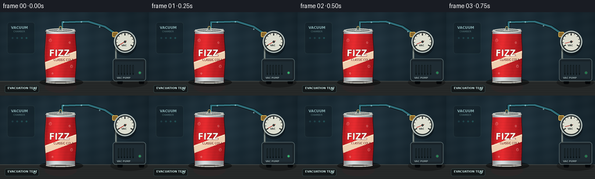
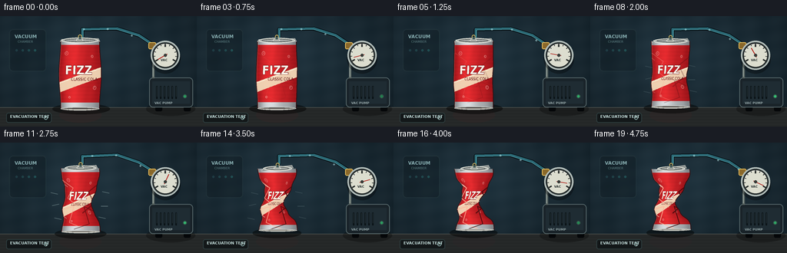

CODING AGENTS AS PIXEL WORLD MODELS
traex/GPT-5.6-Sol · mechanics_0022
点击播放 · 原生 RGB 像素
逐轮保存的候选
回放视频、检查图与代码变化。
每份候选均可单独播放。实际图片检查记录在下方工具轨迹中。
候选 01播放与检查图
点击播放 · 原生 RGB 像素


展开代码变化
--- 上一保存版本
+++ 本次保存版本
@@ -0,0 +1,275 @@
+from pathlib import Path
+import math
+import numpy as np
+from PIL import Image, ImageDraw, ImageFont, ImageFilter
+import artifact_io
+
+CASE_DIR = Path(__file__).resolve().parent
+W, H, N = 256, 144, 20
+S = 4
+SW, SH = W*S, H*S
+
+def font(size, bold=False):
+ choices = [
+ "/usr/share/fonts/truetype/dejavu/DejaVuSans-Bold.ttf" if bold else "/usr/share/fonts/truetype/dejavu/DejaVuSans.ttf",
+ "/usr/share/fonts/truetype/liberation2/LiberationSans-Bold.ttf" if bold else "/usr/share/fonts/truetype/liberation2/LiberationSans-Regular.ttf",
+ ]
+ for p in choices:
+ if Path(p).exists():
+ return ImageFont.truetype(p, size*S)
+ return ImageFont.load_default()
+
+def scpt(p): return tuple(int(round(v*S)) for v in p)
+def smoothstep(x):
+ x = max(0.0, min(1.0, x)); return x*x*(3-2*x)
+
+def make_texture():
+ tw, th = 280, 400
+ yy, xx = np.mgrid[0:th, 0:tw]
+ u = xx/(tw-1)
+ # glossy cherry-red printed aluminum
+ edge = 0.52 + 0.55*np.exp(-((u-.34)/.24)**2) - .33*np.exp(-((u-.02)/.11)**2) - .35*np.exp(-((u-.98)/.13)**2)
+ fine = 3*np.sin(yy*.27) + 2*np.sin(xx*.11+yy*.03)
+ arr = np.empty((th,tw,3), dtype=np.float32)
+ arr[...,0] = 145 + 78*edge + fine
+ arr[...,1] = 16 + 25*edge + fine*.2
+ arr[...,2] = 22 + 23*edge + fine*.25
+ # metallic neck / base bands
+ for a,b in [(0,24),(365,400)]:
+ m=(yy>=a)&(yy<b)
+ silver = 112 + 98*edge
+ arr[...,0][m]=silver[m]; arr[...,1][m]=silver[m]+4; arr[...,2][m]=silver[m]+7
+ arr=np.clip(arr,0,255).astype(np.uint8)
+ im=Image.fromarray(arr,'RGB')
+ d=ImageDraw.Draw(im,'RGBA')
+ # flowing cream emblem and bubbles
+ d.polygon([(0,245),(280,155),(280,215),(0,305)], fill=(242,222,188,235))
+ d.line([(0,251),(280,161)], fill=(255,250,230,210), width=4)
+ f1=ImageFont.truetype('/usr/share/fonts/truetype/dejavu/DejaVuSans-Bold.ttf', 72) if Path('/usr/share/fonts/truetype/dejavu/DejaVuSans-Bold.ttf').exists() else ImageFont.load_default()
+ f2=ImageFont.truetype('/usr/share/fonts/truetype/dejavu/DejaVuSans.ttf', 24) if Path('/usr/share/fonts/truetype/dejavu/DejaVuSans.ttf').exists() else ImageFont.load_default()
+ d.text((40,132),'FIZZ',font=f1,fill=(255,251,235,255),stroke_width=2,stroke_fill=(108,8,15,210))
+ d.text((79,213),'CLASSIC COLA',font=f2,fill=(91,14,19,255))
+ for x,y,r in [(45,74,12),(223,92,8),(238,278,11),(65,334,7)]:
+ d.ellipse((x-r,y-r,x+r,y+r),outline=(255,220,205,130),width=3)
+ d.ellipse((x-r/2,y-r/2,x+r/3,y+r/3),fill=(255,255,255,45))
+ return np.asarray(im)
+
+TEXTURE = make_texture()
+
+def background():
+ yy,xx=np.mgrid[0:SH,0:SW]
+ # cinematic laboratory backdrop
+ rad=np.sqrt(((xx-SW*.43)/(SW*.8))**2+((yy-SH*.35)/(SH*.9))**2)
+ r=18+15*(1-rad); g=30+23*(1-rad); b=37+27*(1-rad)
+ noise=1.7*np.sin(xx*.047)+1.2*np.sin(yy*.071+xx*.013)
+ arr=np.stack([r+noise,g+noise,b+noise],axis=-1)
+ return Image.fromarray(np.uint8(np.clip(arr,0,255)),'RGB')
+
+BASE = background()
+
+def path_line(draw, pts, fill, width):
+ draw.line([scpt(p) for p in pts], fill=fill, width=max(1,int(width*S)), joint='curve')
+
+def draw_hose_and_machine(im, frame, p):
+ d=ImageDraw.Draw(im,'RGBA')
+ # vacuum pump, set back on bench
+ # feet
+ d.rounded_rectangle((*scpt((202,116)),*scpt((211,124))),radius=2*S,fill=(7,10,12,255))
+ d.rounded_rectangle((*scpt((239,116)),*scpt((248,124))),radius=2*S,fill=(7,10,12,255))
+ # machine shadow
+ d.ellipse((*scpt((190,112)),*scpt((254,130))),fill=(0,0,0,70))
+ d.rounded_rectangle((*scpt((194,80)),*scpt((251,119))), radius=5*S, fill=(25,35,41,255), outline=(91,109,112,230), width=S)
+ d.rectangle((*scpt((198,85)),*scpt((247,114))), fill=(31,44,51,255))
+ # vent slots
+ for x in range(203,230,5):
+ d.rounded_rectangle((*scpt((x,91)),*scpt((x+2,108))),radius=S,fill=(8,15,18,220))
+ d.line([scpt((x+1,92)),scpt((x+1,105))],fill=(81,101,105,80),width=S)
+ # power lamp pulse
+ glow=95+int(90*(.5+.5*math.sin(frame*1.8)))
+ d.ellipse((*scpt((238,102)),*scpt((243,107))),fill=(8,43,31,255),outline=(70,110,94,180),width=S)
+ d.ellipse((*scpt((239,103)),*scpt((242,106))),fill=(72,255,151,glow))
+ d.text(scpt((201,111)),"VAC PUMP",font=font(4,bold=True),fill=(145,162,164,220))
+ # hose behind everything, slight vibration at strongest evacuation
+ kick=math.exp(-((frame-11)/3.0)**2)
+ wig=kick*math.sin(frame*2.4)*.8
+ pts=[(107,28),(107,17+wig),(152,16-wig*.4),(181,25+wig),(199,37)]
+ path_line(d,pts,(4,10,13,230),5.2)
+ path_line(d,pts,(43,104,116,255),3.3)
+ path_line(d,[(108,27),(108,18+wig),(151,17-wig*.4),(180,26+wig),(198,38)],(117,205,214,120),.8)
+ # moving pale air traces along tube imply extraction
+ # progress points along the long horizontal/curved hose
+ particles=[((frame*9+j*31)%88) for j in range(3)]
+ for q in particles:
+ if q < 44:
+ x=109+q; y=17 + .4*math.sin(q*.12)
+ else:
+ z=(q-44)/44; x=153+45*z; y=17+20*z
+ d.ellipse((*scpt((x-1.2,y-1.2)),*scpt((x+1.2,y+1.2))),fill=(196,246,249,120))
+ # brass junction
+ d.rounded_rectangle((*scpt((193,34)),*scpt((203,43))),radius=2*S,fill=(138,104,42,255),outline=(232,190,92,255),width=S)
+ d.rectangle((*scpt((198,42)),*scpt((201,81))),fill=(88,99,96,255))
+ d.line([scpt((199,45)),scpt((199,79))],fill=(181,196,189,180),width=S)
+
+
+def draw_gauge(im, p):
+ d=ImageDraw.Draw(im,'RGBA')
+ cx,cy,r=215,51,18
+ # drop shadow and rim
+ d.ellipse((*scpt((cx-r-2,cy-r+2)),*scpt((cx+r+2,cy+r+6))),fill=(0,0,0,80))
+ d.ellipse((*scpt((cx-r-1,cy-r-1)),*scpt((cx+r+1,cy+r+1))),fill=(52,60,61,255),outline=(180,191,187,255),width=2*S)
+ d.ellipse((*scpt((cx-r+2,cy-r+2)),*scpt((cx+r-2,cy+r-2))),fill=(220,221,207,255),outline=(25,31,31,255),width=S)
+ # ticks over 240-degree arc
+ for k in range(11):
+ a=math.radians(150+240*k/10)
+ rr1=r-5 if k%5 else r-7; rr2=r-3
+ x1=cx+rr1*math.cos(a);y1=cy+rr1*math.sin(a)
+ x2=cx+rr2*math.cos(a);y2=cy+rr2*math.sin(a)
+ d.line([scpt((x1,y1)),scpt((x2,y2))],fill=(38,43,42,255),width=S if k%5 else 2*S)
+ d.text(scpt((209,55)),"VAC",font=font(4,bold=True),fill=(37,46,45,255))
+ # needle sweeps from atmospheric left-lower clockwise through dial
+ a=math.radians(150+235*p)
+ tip=(cx+(r-7)*math.cos(a), cy+(r-7)*math.sin(a))
+ tail=(cx-3*math.cos(a),cy-3*math.sin(a))
+ d.line([scpt(tail),scpt(tip)],fill=(173,27,20,255),width=1*S)
+ d.ellipse((*scpt((cx-2,cy-2)),*scpt((cx+2,cy+2))),fill=(55,59,56,255))
+ d.arc((*scpt((cx-r+3,cy-r+3)),*scpt((cx+r-3,cy+r-3))),185,315,fill=(255,255,255,75),width=S)
+
+
+def bounds_at(v, c):
+ cx=104.0
+ # naturally tapered cylindrical can
+ half=26.4 - 1.2*math.cos(v*math.pi*2)
+ # external pressure creates nonuniform inward buckling
+ insetL=c*(15.0*math.exp(-((v-.48)/.22)**2)+7.0*math.exp(-((v-.79)/.12)**2))
+ insetR=c*(18.0*math.exp(-((v-.54)/.20)**2)+6.5*math.exp(-((v-.25)/.12)**2))
+ # late-stage sharp local dents
+ hard=max(0,(c-.38)/.62)
+ insetL += hard*5.0*math.exp(-((v-.27)/.07)**2)
+ insetR += hard*4.0*math.exp(-((v-.76)/.065)**2)
+ center_shift=c*(1.8*math.sin(v*8.2)-2.4*math.exp(-((v-.68)/.19)**2))
+ left=cx+center_shift-half+insetL
+ right=cx+center_shift+half-insetR
+ return left,right
+
+def draw_can(im, frame, c):
+ d=ImageDraw.Draw(im,'RGBA')
+ top=32+2.5*c; bottom=120-7.0*c
+ # shadow shortens and roughens as can collapses
+ d.ellipse((*scpt((68+5*c,114-3*c)),*scpt((143-8*c,128-4*c))),fill=(0,0,0,115))
+ # Compute mapped printable body at high resolution
+ arr=np.asarray(im).copy()
+ th,tw=TEXTURE.shape[:2]
+ y0=int(top*S); y1=int(bottom*S)
+ for Y in range(max(0,y0),min(SH,y1+1)):
+ y=Y/S; v=(y-top)/(bottom-top)
+ l,r=bounds_at(v,c)
+ x0=max(0,int(l*S)); x1=min(SW-1,int(r*S))
+ if x1<=x0: continue
+ xs=np.arange(x0,x1+1)
+ u=(xs/S-l)/(r-l)
+ tx=np.clip((u*(tw-1)).astype(int),0,tw-1)
+ ty=min(th-1,max(0,int(v*(th-1))))
+ arr[Y,xs]=TEXTURE[ty,tx]
+ im.paste(Image.fromarray(arr,'RGB'))
+ d=ImageDraw.Draw(im,'RGBA')
+ # silhouette outlines sampled along deformed walls
+ vs=np.linspace(0,1,70)
+ leftpts=[]; rightpts=[]
+ for v in vs:
+ l,r=bounds_at(float(v),c); y=top+v*(bottom-top)
+ leftpts.append((l,y)); rightpts.append((r,y))
+ path_line(d,leftpts,(43,20,22,230),1.0)
+ path_line(d,rightpts,(50,15,18,240),1.2)
+ path_line(d,[(x+.7,y) for x,y in leftpts],(255,153,138,80),.55)
+ # Buckle/fold highlights, clipped to body silhouette
+ crease=Image.new('RGBA',(SW,SH),(0,0,0,0)); cd=ImageDraw.Draw(crease,'RGBA')
+ intensity=int(220*c)
+ folds=[
+ ([(80,48),(95,59),(88,72),(102,84)],(255,185,160,intensity),1.0),
+ ([(130,52),(115,64),(122,79),(107,92)],(70,7,11,intensity),1.5),
+ ([(79,88),(96,83),(90,104),(109,112)],(255,177,150,intensity),1.0),
+ ([(125,91),(109,83),(116,106),(96,113)],(54,7,9,intensity),1.2),
+ ]
+ for pts,col,wid in folds: path_line(cd,pts,col,wid)
+ # body clip mask
+ mask=Image.new('L',(SW,SH),0); md=ImageDraw.Draw(mask)
+ poly=[scpt(p) for p in leftpts]+[scpt(p) for p in reversed(rightpts)]
+ md.polygon(poly,fill=255)
+ crease.putalpha(Image.composite(crease.getchannel('A'),Image.new('L',(SW,SH),0),mask))
+ im.alpha_composite(crease) if im.mode=='RGBA' else im.paste(crease,(0,0),crease)
+ d=ImageDraw.Draw(im,'RGBA')
+ # bottom rolled rim follows compressed can bottom
+ bl,br=bounds_at(1,c)
+ bh=3.0*(1-.35*c)
+ d.ellipse((*scpt((bl,bottom-bh/2)),*scpt((br,bottom+bh))),fill=(74,70,68,255),outline=(201,204,198,255),width=S)
+ d.arc((*scpt((bl+2,bottom-bh/2)),*scpt((br-2,bottom+bh-1))),0,180,fill=(250,246,229,155),width=S)
+ # aluminum top and sealed lid; deforms/tilts as shell implodes
+ top_half=26*(1-.23*c); tcx=104+1.2*c
+ tilt=2.2*c
+ top_poly=[(tcx-top_half,top+1+tilt),(tcx-top_half+2,top-2+tilt),(tcx+top_half-2,top-3-tilt),(tcx+top_half,top+1-tilt)]
+ d.polygon([scpt(q) for q in top_poly],fill=(142,148,146,255),outline=(230,231,220,255))
+ d.ellipse((*scpt((tcx-top_half+2,top-4+tilt*.2)),*scpt((tcx+top_half-2,top+3-tilt*.2))),fill=(166,171,168,255),outline=(235,236,224,255),width=S)
+ d.ellipse((*scpt((tcx-top_half+6,top-2.7)),*scpt((tcx+top_half-6,top+1.5))),outline=(91,96,94,255),width=S)
+ # sealed pull tab and airtight vacuum nipple
+ d.rounded_rectangle((*scpt((tcx-5,top-2.2)),*scpt((tcx+4,top+.4))),radius=S,fill=(111,117,115,255),outline=(219,221,211,255),width=S)
+ d.ellipse((*scpt((tcx-2.4,top-8)),*scpt((tcx+2.4,top-3))),fill=(34,44,44,255),outline=(201,177,98,255),width=S)
+ d.rectangle((*scpt((tcx-1.5,top-5)),*scpt((tcx+1.5,top-2))),fill=(68,91,90,255))
+ # specular pinpoints on tortured aluminum
+ if c>.18:
+ for v,side in [(.28,'l'),(.52,'r'),(.78,'l')]:
+ l,r=bounds_at(v,c); x=(l+2 if side=='l' else r-2); y=top+v*(bottom-top)
+ d.line([scpt((x-2,y-2)),scpt((x+2,y+1))],fill=(255,223,204,int(150*c)),width=S)
+
+
+def render(frame):
+ # pressure ramps steadily, then rapidly passes structural buckling threshold
+ q=frame/(N-1)
+ pressure=smoothstep(q)
+ early=.17*smoothstep(q/.46)
+ burst=.83/(1+math.exp(-10.5*(q-.57)))
+ raw=early+burst
+ # normalize so first is pristine and last fully crushed
+ b0=.83/(1+math.exp(10.5*.57))
+ b1=.17+.83/(1+math.exp(-10.5*(1-.57)))
+ c=max(0,min(1,(raw-b0)/(b1-b0)))
+ im=BASE.copy()
+ d=ImageDraw.Draw(im,'RGBA')
+ # soft distant lab panel / indicator dots
+ d.rounded_rectangle((*scpt((12,17)),*scpt((60,72))),radius=5*S,fill=(10,20,25,80),outline=(103,137,141,35),width=S)
+ d.text(scpt((19,23)),"VACUUM",font=font(6,bold=True),fill=(135,173,176,120))
+ d.text(scpt((23,31)),"CHAMBER",font=font(4),fill=(95,130,133,90))
+ for j in range(4):
+ d.ellipse((*scpt((20+j*8,43)),*scpt((23+j*8,46))),fill=(49,106+15*j,112+12*j,90))
+ # tabletop
+ d.rectangle((*scpt((0,119)),*scpt((256,144))),fill=(36,39,39,255))
+ d.line([scpt((0,119)),scpt((256,119))],fill=(116,119,111,110),width=S)
+ # subtle brushed table texture and reflected can red
+ for y in range(121,144,4):
+ d.line([scpt((0,y)),scpt((256,y))],fill=(94,96,89,18),width=S)
+ d.ellipse((*scpt((77,119)),*scpt((132,139))),fill=(107,26,29,int(24*(1-c*.5))))
+ draw_hose_and_machine(im,frame,pressure)
+ draw_gauge(im,pressure)
+ draw_can(im,frame,c)
+ # Stress wisps during rapid implosion: short, restrained motion accents
+ d=ImageDraw.Draw(im,'RGBA')
+ rate=math.exp(-((q-.58)/.17)**2)
+ if rate>.2:
+ alpha=int(95*rate)
+ for k,(yy,sgn) in enumerate([(65,1),(82,-1),(98,1)]):
+ off=3*math.sin(frame*1.3+k)
+ d.line([scpt((69-off,yy)),scpt((78-off,yy+sgn*2))],fill=(187,213,210,alpha),width=S)
+ d.line([scpt((139+off,yy+1)),scpt((130+off,yy-sgn*1))],fill=(187,213,210,alpha),width=S)
+ # foreground caption plate
+ d.rounded_rectangle((*scpt((8,126)),*scpt((67,139))),radius=3*S,fill=(6,11,14,150),outline=(114,158,160,70),width=S)
+ d.text(scpt((13,128)),"EVACUATION TEST",font=font(5,bold=True),fill=(197,222,220,220))
+ # tiny time-lapse indicator
+ d.ellipse((*scpt((57,130)),*scpt((62,135))),outline=(170,211,208,190),width=S)
+ ang=-math.pi/2+frame*.8
+ d.line([scpt((59.5,132.5)),scpt((59.5+1.7*math.cos(ang),132.5+1.7*math.sin(ang)))],fill=(215,236,230,220),width=S)
+ # overall optical finishing
+ im=im.resize((W,H),Image.Resampling.LANCZOS)
+ return np.asarray(im.convert('RGB'),dtype=np.uint8)
+
+frames=np.stack([render(i) for i in range(N)],axis=0)
+artifact_io.save(frames,CASE_DIR)
+print('saved',frames.shape,frames.dtype,'range',frames.min(),frames.max())
可观测工具轨迹
实际执行的命令与返回图片。
命令 1exit 0
/bin/bash -lc "cat prompt.txt && printf '\\n---RULES---\\n' && cat GENERATION_RULES.md && printf '\\n---SPEC---\\n' && cat task_spec.json"
命令 2exit 0
/bin/bash -lc "find . -maxdepth 2 -type f -printf '%p\\n' | sort"
命令 3exit 0
/bin/bash -lc 'cat artifact_io.py'
命令 4exit 0
/bin/bash -lc "cat > generate.py <<'PY'
from pathlib import Path
import math
import numpy as np
from PIL import Image, ImageDraw, ImageFont, ImageFilter
import artifact_io
CASE_DIR = Path(__file__).resolve().parent
W, H, N = 256, 144, 20
S = 4
SW, SH = W*S, H*S
def font(size, bold=False):
choices = [
\"/usr/share/fonts/truetype/dejavu/DejaVuSans-Bold.ttf\" if bold else \"/usr/share/fonts/truetype/dejavu/DejaVuSans.ttf\",
\"/usr/share/fonts/truetype/liberation2/LiberationSans-Bold.ttf\" if bold else \"/usr/share/fonts/truetype/liberation2/LiberationSans-Regular.ttf\",
]
for p in choices:
if Path(p).exists():
return ImageFont.truetype(p, size*S)
return ImageFont.load_default()
def scpt(p): return tuple(int(round(v*S)) for v in p)
def smoothstep(x):
x = max(0.0, min(1.0, x)); return x*x*(3-2*x)
def make_texture():
tw, th = 280, 400
yy, xx = np.mgrid[0:th, 0:tw]
u = xx/(tw-1)
# glossy cherry-red printed aluminum
edge = 0.52 + 0.55*np.exp(-((u-.34)/.24)**2) - .33*np.exp(-((u-.02)/.11)**2) - .35*np.exp(-((u-.98)/.13)**2)
fine = 3*np.sin(yy*.27) + 2*np.sin(xx*.11+yy*.03)
arr = np.empty((th,tw,3), dtype=np.float32)
arr[...,0] = 145 + 78*edge + fine
arr[...,1] = 16 + 25*edge + fine*.2
arr[...,2] = 22 + 23*edge + fine*.25
# metallic neck / base bands
for a,b in [(0,24),(365,400)]:
m=(yy>=a)&(yy<b)
silver = 112 + 98*edge
arr[...,0][m]=silver[m]; arr[...,1][m]=silver[m]+4; arr[...,2][m]=silver[m]+7
arr=np.clip(arr,0,255).astype(np.uint8)
im=Image.fromarray(arr,'RGB')
d=ImageDraw.Draw(im,'RGBA')
# flowing cream emblem and bubbles
d.polygon([(0,245),(280,155),(280,215),(0,305)], fill=(242,222,188,235))
d.line([(0,251),(280,161)], fill=(255,250,230,210), width=4)
f1=ImageFont.truetype('/usr/share/fonts/truetype/dejavu/DejaVuSans-Bold.ttf', 72) if Path('/usr/share/fonts/truetype/dejavu/DejaVuSans-Bold.ttf').exists() else ImageFont.load_default()
f2=ImageFont.truetype('/usr/share/fonts/truetype/dejavu/DejaVuSans.ttf', 24) if Path('/usr/share/fonts/truetype/dejavu/DejaVuSans.ttf').exists() else ImageFont.load_default()
d.text((40,132),'FIZZ',font=f1,fill=(255,251,235,255),stroke_width=2,stroke_fill=(108,8,15,210))
d.text((79,213),'CLASSIC COLA',font=f2,fill=(91,14,19,255))
for x,y,r in [(45,74,12),(223,92,8),(238,278,11),(65,334,7)]:
d.ellipse((x-r,y-r,x+r,y+r),outline=(255,220,205,130),width=3)
d.ellipse((x-r/2,y-r/2,x+r/3,y+r/3),fill=(255,255,255,45))
return np.asarray(im)
TEXTURE = make_texture()
def background():
yy,xx=np.mgrid[0:SH,0:SW]
# cinematic laboratory backdrop
rad=np.sqrt(((xx-SW*.43)/(SW*.8))**2+((yy-SH*.35)/(SH*.9))**2)
r=18+15*(1-rad); g=30+23*(1-rad); b=37+27*(1-rad)
noise=1.7*np.sin(xx*.047)+1.2*np.sin(yy*.071+xx*.013)
arr=np.stack([r+noise,g+noise,b+noise],axis=-1)
return Image.fromarray(np.uint8(np.clip(arr,0,255)),'RGB')
BASE = background()
def path_line(draw, pts, fill, width):
draw.line([scpt(p) for p in pts], fill=fill, width=max(1,int(width*S)), joint='curve')
def draw_hose_and_machine(im, frame, p):
d=ImageDraw.Draw(im,'RGBA')
# vacuum pump, set back on bench
# feet
d.rounded_rectangle((*scpt((202,116)),*scpt((211,124))),radius=2*S,fill=(7,10,12,255))
d.rounded_rectangle((*scpt((239,116)),*scpt((248,124))),radius=2*S,fill=(7,10,12,255))
# machine shadow
d.ellipse((*scpt((190,112)),*scpt((254,130))),fill=(0,0,0,70))
d.rounded_rectangle((*scpt((194,80)),*scpt((251,119))), radius=5*S, fill=(25,35,41,255), outline=(91,109,112,230), width=S)
d.rectangle((*scpt((198,85)),*scpt((247,114))), fill=(31,44,51,255))
# vent slots
for x in range(203,230,5):
d.rounded_rectangle((*scpt((x,91)),*scpt((x+2,108))),radius=S,fill=(8,15,18,220))
d.line([scpt((x+1,92)),scpt((x+1,105))],fill=(81,101,105,80),width=S)
# power lamp pulse
glow=95+int(90*(.5+.5*math.sin(frame*1.8)))
d.ellipse((*scpt((238,102)),*scpt((243,107))),fill=(8,43,31,255),outline=(70,110,94,180),width=S)
d.ellipse((*scpt((239,103)),*scpt((242,106))),fill=(72,255,151,glow))
d.text(scpt((201,111)),\"VAC PUMP\",font=font(4,bold=True),fill=(145,162,164,220))
# hose behind everything, slight vibration at strongest evacuation
kick=math.exp(-((frame-11)/3.0)**2)
wig=kick*math.sin(frame*2.4)*.8
pts=[(107,28),(107,17+wig),(152,16-wig*.4),(181,25+wig),(199,37)]
path_line(d,pts,(4,10,13,230),5.2)
path_line(d,pts,(43,104,116,255),3.3)
path_line(d,[(108,27),(108,18+wig),(151,17-wig*.4),(180,26+wig),(198,38)],(117,205,214,120),.8)
# moving pale air traces along tube imply extraction
# progress points along the long horizontal/curved hose
particles=[((frame*9+j*31)%88) for j in range(3)]
for q in particles:
if q < 44:
x=109+q; y=17 + .4*math.sin(q*.12)
else:
z=(q-44)/44; x=153+45*z; y=17+20*z
d.ellipse((*scpt((x-1.2,y-1.2)),*scpt((x+1.2,y+1.2))),fill=(196,246,249,120))
# brass junction
d.rounded_rectangle((*scpt((193,34)),*scpt((203,43))),radius=2*S,fill=(138,104,42,255),outline=(232,190,92,255),width=S)
d.rectangle((*scpt((198,42)),*scpt((201,81))),fill=(88,99,96,255))
d.line([scpt((199,45)),scpt((199,79))],fill=(181,196,189,180),width=S)
def draw_gauge(im, p):
d=ImageDraw.Draw(im,'RGBA')
cx,cy,r=215,51,18
# drop shadow and rim
d.ellipse((*scpt((cx-r-2,cy-r+2)),*scpt((cx+r+2,cy+r+6))),fill=(0,0,0,80))
d.ellipse((*scpt((cx-r-1,cy-r-1)),*scpt((cx+r+1,cy+r+1))),fill=(52,60,61,255),outline=(180,191,187,255),width=2*S)
d.ellipse((*scpt((cx-r+2,cy-r+2)),*scpt((cx+r-2,cy+r-2))),fill=(220,221,207,255),outline=(25,31,31,255),width=S)
# ticks over 240-degree arc
for k in range(11):
a=math.radians(150+240*k/10)
rr1=r-5 if k%5 else r-7; rr2=r-3
x1=cx+rr1*math.cos(a);y1=cy+rr1*math.sin(a)
x2=cx+rr2*math.cos(a);y2=cy+rr2*math.sin(a)
d.line([scpt((x1,y1)),scpt((x2,y2))],fill=(38,43,42,255),width=S if k%5 else 2*S)
d.text(scpt((209,55)),\"VAC\",font=font(4,bold=True),fill=(37,46,45,255))
# needle sweeps from atmospheric left-lower clockwise through dial
a=math.radians(150+235*p)
tip=(cx+(r-7)*math.cos(a), cy+(r-7)*math.sin(a))
tail=(cx-3*math.cos(a),cy-3*math.sin(a))
d.line([scpt(tail),scpt(tip)],fill=(173,27,20,255),width=1*S)
d.ellipse((*scpt((cx-2,cy-2)),*scpt((cx+2,cy+2))),fill=(55,59,56,255))
d.arc((*scpt((cx-r+3,cy-r+3)),*scpt((cx+r-3,cy+r-3))),185,315,fill=(255,255,255,75),width=S)
def bounds_at(v, c):
cx=104.0
# naturally tapered cylindrical can
half=26.4 - 1.2*math.cos(v*math.pi*2)
# external pressure creates nonuniform inward buckling
insetL=c*(15.0*math.exp(-((v-.48)/.22)**2)+7.0*math.exp(-((v-.79)/.12)**2))
insetR=c*(18.0*math.exp(-((v-.54)/.20)**2)+6.5*math.exp(-((v-.25)/.12)**2))
# late-stage sharp local dents
hard=max(0,(c-.38)/.62)
insetL += hard*5.0*math.exp(-((v-.27)/.07)**2)
insetR += hard*4.0*math.exp(-((v-.76)/.065)**2)
center_shift=c*(1.8*math.sin(v*8.2)-2.4*math.exp(-((v-.68)/.19)**2))
left=cx+center_shift-half+insetL
right=cx+center_shift+half-insetR
return left,right
def draw_can(im, frame, c):
d=ImageDraw.Draw(im,'RGBA')
top=32+2.5*c; bottom=120-7.0*c
# shadow shortens and roughens as can collapses
d.ellipse((*scpt((68+5*c,114-3*c)),*scpt((143-8*c,128-4*c))),fill=(0,0,0,115))
# Compute mapped printable body at high resolution
arr=np.asarray(im).copy()
th,tw=TEXTURE.shape[:2]
y0=int(top*S); y1=int(bottom*S)
for Y in range(max(0,y0),min(SH,y1+1)):
y=Y/S; v=(y-top)/(bottom-top)
l,r=bounds_at(v,c)
x0=max(0,int(l*S)); x1=min(SW-1,int(r*S))
if x1<=x0: continue
xs=np.arange(x0,x1+1)
u=(xs/S-l)/(r-l)
tx=np.clip((u*(tw-1)).astype(int),0,tw-1)
ty=min(th-1,max(0,int(v*(th-1))))
arr[Y,xs]=TEXTURE[ty,tx]
im.paste(Image.fromarray(arr,'RGB'))
d=ImageDraw.Draw(im,'RGBA')
# silhouette outlines sampled along deformed walls
vs=np.linspace(0,1,70)
leftpts=[]; rightpts=[]
for v in vs:
l,r=bounds_at(float(v),c); y=top+v*(bottom-top)
leftpts.append((l,y)); rightpts.append((r,y))
path_line(d,leftpts,(43,20,22,230),1.0)
path_line(d,rightpts,(50,15,18,240),1.2)
path_line(d,[(x+.7,y) for x,y in leftpts],(255,153,138,80),.55)
# Buckle/fold highlights, clipped to body silhouette
crease=Image.new('RGBA',(SW,SH),(0,0,0,0)); cd=ImageDraw.Draw(crease,'RGBA')
intensity=int(220*c)
folds=[
([(80,48),(95,59),(88,72),(102,84)],(255,185,160,intensity),1.0),
([(130,52),(115,64),(122,79),(107,92)],(70,7,11,intensity),1.5),
([(79,88),(96,83),(90,104),(109,112)],(255,177,150,intensity),1.0),
([(125,91),(109,83),(116,106),(96,113)],(54,7,9,intensity),1.2),
]
for pts,col,wid in folds: path_line(cd,pts,col,wid)
# body clip mask
mask=Image.new('L',(SW,SH),0); md=ImageDraw.Draw(mask)
poly=[scpt(p) for p in leftpts]+[scpt(p) for p in reversed(rightpts)]
md.polygon(poly,fill=255)
crease.putalpha(Image.composite(crease.getchannel('A'),Image.new('L',(SW,SH),0),mask))
im.alpha_composite(crease) if im.mode=='RGBA' else im.paste(crease,(0,0),crease)
d=ImageDraw.Draw(im,'RGBA')
# bottom rolled rim follows compressed can bottom
bl,br=bounds_at(1,c)
bh=3.0*(1-.35*c)
d.ellipse((*scpt((bl,bottom-bh/2)),*scpt((br,bottom+bh))),fill=(74,70,68,255),outline=(201,204,198,255),width=S)
d.arc((*scpt((bl+2,bottom-bh/2)),*scpt((br-2,bottom+bh-1))),0,180,fill=(250,246,229,155),width=S)
# aluminum top and sealed lid; deforms/tilts as shell implodes
top_half=26*(1-.23*c); tcx=104+1.2*c
tilt=2.2*c
top_poly=[(tcx-top_half,top+1+tilt),(tcx-top_half+2,top-2+tilt),(tcx+top_half-2,top-3-tilt),(tcx+top_half,top+1-tilt)]
d.polygon([scpt(q) for q in top_poly],fill=(142,148,146,255),outline=(230,231,220,255))
d.ellipse((*scpt((tcx-top_half+2,top-4+tilt*.2)),*scpt((tcx+top_half-2,top+3-tilt*.2))),fill=(166,171,168,255),outline=(235,236,224,255),width=S)
d.ellipse((*scpt((tcx-top_half+6,top-2.7)),*scpt((tcx+top_half-6,top+1.5))),outline=(91,96,94,255),width=S)
# sealed pull tab and airtight vacuum nipple
d.rounded_rectangle((*scpt((tcx-5,top-2.2)),*scpt((tcx+4,top+.4))),radius=S,fill=(111,117,115,255),outline=(219,221,211,255),width=S)
d.ellipse((*scpt((tcx-2.4,top-8)),*scpt((tcx+2.4,top-3))),fill=(34,44,44,255),outline=(201,177,98,255),width=S)
d.rectangle((*scpt((tcx-1.5,top-5)),*scpt((tcx+1.5,top-2))),fill=(68,91,90,255))
# specular pinpoints on tortured aluminum
if c>.18:
for v,side in [(.28,'l'),(.52,'r'),(.78,'l')]:
l,r=bounds_at(v,c); x=(l+2 if side=='l' else r-2); y=top+v*(bottom-top)
d.line([scpt((x-2,y-2)),scpt((x+2,y+1))],fill=(255,223,204,int(150*c)),width=S)
def render(frame):
# pressure ramps steadily, then rapidly passes structural buckling threshold
q=frame/(N-1)
pressure=smoothstep(q)
early=.17*smoothstep(q/.46)
burst=.83/(1+math.exp(-10.5*(q-.57)))
raw=early+burst
# normalize so first is pristine and last fully crushed
b0=.83/(1+math.exp(10.5*.57))
b1=.17+.83/(1+math.exp(-10.5*(1-.57)))
c=max(0,min(1,(raw-b0)/(b1-b0)))
im=BASE.copy()
d=ImageDraw.Draw(im,'RGBA')
# soft distant lab panel / indicator dots
d.rounded_rectangle((*scpt((12,17)),*scpt((60,72))),radius=5*S,fill=(10,20,25,80),outline=(103,137,141,35),width=S)
d.text(scpt((19,23)),\"VACUUM\",font=font(6,bold=True),fill=(135,173,176,120))
d.text(scpt((23,31)),\"CHAMBER\",font=font(4),fill=(95,130,133,90))
for j in range(4):
d.ellipse((*scpt((20+j*8,43)),*scpt((23+j*8,46))),fill=(49,106+15*j,112+12*j,90))
# tabletop
d.rectangle((*scpt((0,119)),*scpt((256,144))),fill=(36,39,39,255))
d.line([scpt((0,119)),scpt((256,119))],fill=(116,119,111,110),width=S)
# subtle brushed table texture and reflected can red
for y in range(121,144,4):
d.line([scpt((0,y)),scpt((256,y))],fill=(94,96,89,18),width=S)
d.ellipse((*scpt((77,119)),*scpt((132,139))),fill=(107,26,29,int(24*(1-c*.5))))
draw_hose_and_machine(im,frame,pressure)
draw_gauge(im,pressure)
draw_can(im,frame,c)
# Stress wisps during rapid implosion: short, restrained motion accents
d=ImageDraw.Draw(im,'RGBA')
rate=math.exp(-((q-.58)/.17)**2)
if rate>.2:
alpha=int(95*rate)
for k,(yy,sgn) in enumerate([(65,1),(82,-1),(98,1)]):
off=3*math.sin(frame*1.3+k)
d.line([scpt((69-off,yy)),scpt((78-off,yy+sgn*2))],fill=(187,213,210,alpha),width=S)
d.line([scpt((139+off,yy+1)),scpt((130+off,yy-sgn*1))],fill=(187,213,210,alpha),width=S)
# foreground caption plate
d.rounded_rectangle((*scpt((8,126)),*scpt((67,139))),radius=3*S,fill=(6,11,14,150),outline=(114,158,160,70),width=S)
d.text(scpt((13,128)),\"EVACUATION TEST\",font=font(5,bold=True),fill=(197,222,220,220))
# tiny time-lapse indicator
d.ellipse((*scpt((57,130)),*scpt((62,135))),outline=(170,211,208,190),width=S)
ang=-math.pi/2+frame*.8
d.line([scpt((59.5,132.5)),scpt((59.5+1.7*math.cos(ang),132.5+1.7*math.sin(ang)))],fill=(215,236,230,220),width=S)
# overall optical finishing
im=im.resize((W,H),Image.Resampling.LANCZOS)
return np.asarray(im.convert('RGB'),dtype=np.uint8)
frames=np.stack([render(i) for i in range(N)],axis=0)
artifact_io.save(frames,CASE_DIR)
print('saved',frames.shape,frames.dtype,'range',frames.min(),frames.max())
PY
python generate.py"命令 5exit 1
/bin/bash -lc "python - <<'PY'
import numpy as np, json
from pathlib import Path
p=Path('.')
a=np.load('pixels.npz')['pixels']
print('pixels',a.shape,a.dtype)
print('frames',len(list((p/'frames').glob('*.png'))))
print('artifacts',[(x.name,x.stat().st_size) for x in [p/'pixels.npz',p/'index.html',p/'inspection.png',p/'transition_check.png']])
# changed pixels and mean frame diffs
x=np.stack([np.asarray(__import__('PIL').Image.open(f'frames/{i:02}.png')).astype(int) for i in range(20)])
print('mean adjacent abs diff',np.mean(abs(x[1:]-x[:-1]),axis=(1,2,3)).round(2).tolist())
PY"命令 6exit 0
/bin/bash -lc "python - <<'PY'
import numpy as np
from PIL import Image
from pathlib import Path
p=Path('.')
x=np.stack([np.asarray(Image.open(p/'frames'/f'{i:02}.png')).astype(np.int16) for i in range(20)])
print('shape:',x.shape,'mode:',Image.open(p/'frames/00.png').mode)
print('adjacent mean abs diff:',np.mean(np.abs(x[1:]-x[:-1]),axis=(1,2,3)).round(2).tolist())
assert x.shape==(20,144,256,3)
assert all(Image.open(f).mode=='RGB' for f in sorted((p/'frames').glob('*.png')))
assert all((p/f).exists() for f in ['pixels.npz','index.html','inspection.png','transition_check.png','generate.py'])
print('validation: OK')
PY"视觉工具实际返回图片 1

视觉工具实际返回图片 2

保存候选 1 份；完成命令 6 次；可验证图片返回 2 张。原始 API 响应与完整日志保留在本地。